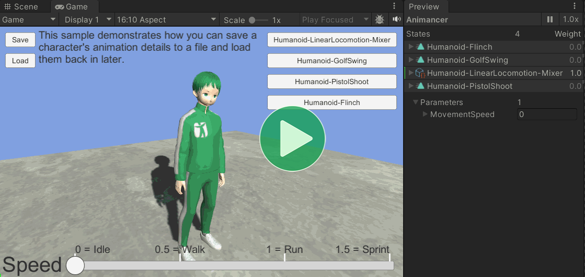
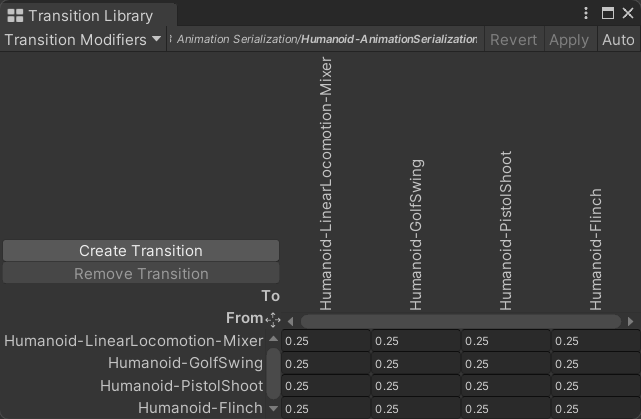
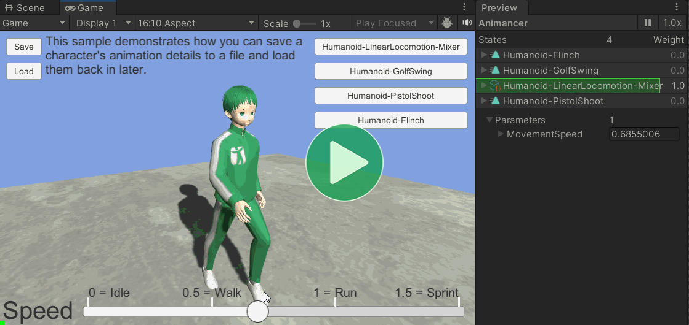
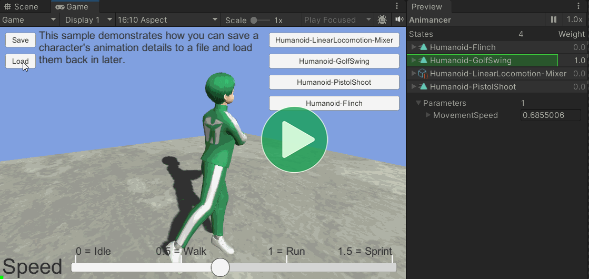
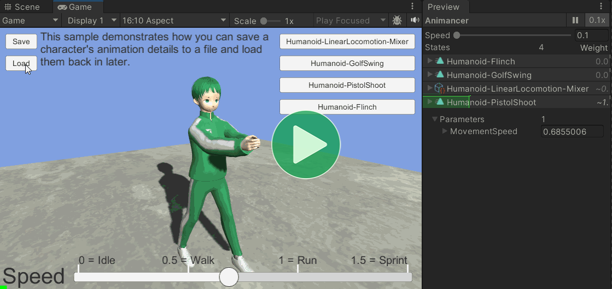

Location: Samples/03 Mixers/03 Animation Serialization
Recommended After: Library Character and Linear Mixer
Learning Outcomes: in this sample you will learn:
How to gather a serializable description of a character's pose.
How to use Unity's
JsonUtilityto save and load data.
Summary
This sample demonstrates how you can serialize a character's animation details to save in a file or send over a network. This is done by using a Transition Library as a centralised list of all the available animations so that any given animation can be identified by serializing its index in that list.

It doesn't really have anything to do with Mixers, but it's in this group so it can reuse the things introduced in the Linear Mixer sample.
Overview
The code structure has a lot going on:
{kind=link}
- The
FloatParameterSlider, Mixer, and String Asset are reused from the Linear Mixer sample. - The Transition Library uses the Mixer and a few more animations.
PlayAnimationButtons creates a Sample Button to play each of the animations in the Transition Library:
using Animancer;
using UnityEngine;
public class PlayAnimationButtons : MonoBehaviour
{
[SerializeField] private SampleButton _Button;
[SerializeField] private AnimancerComponent _Animancer;
protected virtual void Awake()
{
TransitionLibraryDefinition library = _Animancer.Transitions.Definition;
TransitionAssetBase idle = library.Transitions[0];
_Animancer.Play(idle);
for (int i = 0; i < library.Transitions.Length; i++)
{
TransitionAssetBase transition = library.Transitions[i];
AnimancerState state = _Animancer.States.GetOrCreate(transition);
if (!state.IsLooping)
state.Events(this).OnEnd ??= () => _Animancer.Play(idle);
_Button.AddButton(
i,
transition.name,
() => _Animancer.Play(transition));
}
}
}
SaveLoadButtons connects some UI Buttons to save and load the SerializablePose using Unity's JsonUtility:
using Animancer;
using System.IO;
using UnityEngine;
using UnityEngine.UI;
public class SaveLoadButtons : MonoBehaviour
{
[SerializeField] private AnimancerComponent _Animancer;
[SerializeField] private StringAsset _SpeedParameter;
[SerializeField] private Button _SaveButton;
[SerializeField] private Button _LoadButton;
[SerializeField] private string _FilePath = "Temp/AnimancerSerializedPose.json";
private readonly SerializablePose SerializablePose = new();
protected virtual void Awake()
{
_SaveButton.onClick.AddListener(Save);
_LoadButton.onClick.AddListener(Load);
}
private void Save()
{
SerializablePose.GatherFrom(_Animancer, _SpeedParameter);
string json = JsonUtility.ToJson(SerializablePose);
File.WriteAllText(_FilePath, json);
}
private void Load()
{
string json = File.ReadAllText(_FilePath);
JsonUtility.FromJsonOverwrite(json, SerializablePose);
SerializablePose.ApplyTo(_Animancer, _SpeedParameter);
}
}
SerializablePose is the main pourpose of this sample where the relevant details are gathered from Animancer to save and applied back to Animancer after loading:
using Animancer;
using Animancer.TransitionLibraries;
using System;
using System.Collections.Generic;
using UnityEngine;
[Serializable]
public class SerializablePose
{
[SerializeField] private float _RemainingFadeDuration;
[SerializeField] private float _SpeedParameter;
[SerializeField] private List<StateData> _States = new();
[Serializable]
public struct StateData
{
public byte index;
public float time;
public float weight;
}
public void GatherFrom(AnimancerComponent animancer, StringReference speedParameter)
{
_States.Clear();
_RemainingFadeDuration = 0;
_SpeedParameter = animancer.Parameters.GetFloat(speedParameter);
TransitionLibrary library = animancer.Graph.Transitions;
IReadOnlyIndexedList<AnimancerState> activeStates = animancer.Layers[0].ActiveStates;
for (int i = 0; i < activeStates.Count; i++)
{
AnimancerState state = activeStates[i];
_States.Add(new StateData()
{
index = (byte)animancer.Graph.Transitions.IndexOf(state.Key),
time = state.Time,
weight = state.Weight,
});
if (state.FadeGroup != null &&
state.TargetWeight == 1)
{
_RemainingFadeDuration = state.FadeGroup.RemainingFadeDuration;
if (i > 0)
(_States[0], _States[i]) = (_States[i], _States[0]);
}
}
if (fadeInIndex > 0)
{
(_States[0], _States[fadeInIndex]) = (_States[fadeInIndex], _States[0]);
}
}
public void ApplyTo(AnimancerComponent animancer, StringReference speedParameter)
{
AnimancerLayer layer = animancer.Layers[0];
layer.Stop();
layer.Weight = 1;
AnimancerState firstState = null;
for (int i = _States.Count - 1; i >= 0; i--)
{
StateData stateData = _States[i];
if (!animancer.Graph.Transitions.TryGetTransition(
stateData.index,
out TransitionModifierGroup transition))
{
Debug.LogError(
$"Transition Library '{animancer.Transitions}'" +
$" doesn't contain transition index {stateData.index}.",
animancer);
continue;
}
AnimancerState state = layer.GetOrCreateState(transition.Transition);
state.IsPlaying = true;
state.Time = stateData.time;
state.SetWeight(stateData.weight);
if (i == 0)
firstState = state;
}
layer.Play(firstState, _RemainingFadeDuration);
animancer.Parameters.SetValue(speedParameter, _SpeedParameter);
}
}
Transition Library
Transition Libraries are normally used to modify fade durations depending on what was previously playing, but that's not what this one is for.

In this sample, the library is used as a way of consistently identifying the animations:
- Before saving,
animancer.Graph.Transitions.IndexOf(state.Key)finds out where eachstateis located in the library so that index can be serialized. - Then after loading,
animancer.Graph.Transitions.TryGetTransitiongets the transition from the serialized index so that the same animation can be played.
The full saving and loading process will be explained later.
Play Buttons
In order for this sample to have something easily observable to show, the PlayAnimationButtons script creates a Sample Button to play each of the animations in the Transition Library.
public class PlayAnimationButtons : MonoBehaviour
{
[SerializeField] private SampleButton _Button;
[SerializeField] private AnimancerComponent _Animancer;
protected virtual void Awake()
{
Assume the first animation in the library is Idle and play it by default:
TransitionLibraryDefinition library = _Animancer.Transitions.Definition;
TransitionAssetBase idle = library.Transitions[0];
_Animancer.Play(idle);
Then go through them all:
for (int i = 0; i < library.Transitions.Length; i++)
{
TransitionAssetBase transition = library.Transitions[i];
Set up their End Events which will be explained below:
AnimancerState state = _Animancer.States.GetOrCreate(transition);
if (!state.IsLooping)
state.Events(this).OnEnd ??= () => _Animancer.Play(idle);
Then create a Sample Button to play them:
_Button.AddButton(
i,
transition.name,
() => _Animancer.Play(transition));
}
}
}
Note how the buttons call _Animancer.Play(transition). It may be tempting to have them call _Animancer.Play(state) since we already have the state, but that would cause it to play immediately without the Fade Duration because that detail is only stored in the transition.
End Events
It also needs to give the non-looping states End Events to return to the Idle animation, however this presents a problem. Normally, we would initialize the events the first time a particular transition is played like this:
AnimancerState state = _Animancer.Play(transition);
if (!state.IsLooping)
state.Events(this).OnEnd ??= () => _Animancer.Play(idle);
But that wouldn't work in this sample because the other scripts can also play an animation when loading the saved file and they won't know about the event. For example:
- Click the Shoot button.
- Save the file with that animation playing.
- Load the file.
- The Shoot animation plays and its End Event works as expected.
- Exit Play Mode.
- Enter Play Mode again.
- Load the file.
- The Shoot animation plays, but since it wasn't played by
PlayAnimationButtonsits End Event hasn't been set.
To avoid that, we unfortunately need to create all the animation states on startup to assign their End Events before they're played. That's why the script does this:
AnimancerState state = _Animancer.States.GetOrCreate(transition);
if (!state.IsLooping)
state.Events(this).OnEnd ??= () => _Animancer.Play(idle);
Serialization Process
The saving and loading process in SaveLoadButtons is fairly simple.
[SerializeField] private AnimancerComponent _Animancer;
[SerializeField] private StringAsset _SpeedParameter;
[SerializeField] private string _FilePath = "Temp/AnimancerSerializedPose.json";
private readonly SerializablePose SerializablePose = new();
- Gather the data we want into a serializable format.
- Serialize that data.
- Write the serialized data to a file (or send it over a network).
private void Save()
{
SerializablePose.GatherFrom(_Animancer, _SpeedParameter);
string json = JsonUtility.ToJson(SerializablePose);
File.WriteAllText(_FilePath, json);
}
And loading is basically the same thing in reverse:
- Read the file.
- Deserialize the contents of the file into our serializable format.
- Apply the deserialized values to the animation system.
private void Load()
{
string json = File.ReadAllText(_FilePath);
JsonUtility.FromJsonOverwrite(json, SerializablePose);
SerializablePose.ApplyTo(_Animancer, _SpeedParameter);
}
Those methods are simply bound to UI Buttons on startup:
[SerializeField] private Button _SaveButton;
[SerializeField] private Button _LoadButton;
protected virtual void Awake()
{
_SaveButton.onClick.AddListener(Save);
_LoadButton.onClick.AddListener(Load);
}
File Path
Note that the default _FilePath is in the Temp folder which gets automatically deleted every time you close the Unity Editor, so if you want the file to persist between editor sessions you'll need to set a different path.
What should you Serialize?
There are two main reasons you might want to serialize the current details of Animancer, each with different things that should be prioritised in their implementation:
- Files - When saving a file, the most important factor is generally forwards compatibility. You want any files saved in an old version of your application to still work if you load them in a newer version.
- Networking - When synchronising animations over a network, you can generally force everyone to be using the same application version so it's generally much more important to minimise the amount of data you need to send in order to maximise speed.
That distinction is important because data efficiency can be greatly improved by sacrificing compatibility in two main ways:
- Knowing the exact structure of the data based on context.
- If everyone is on the same version of your application, you could send a network packet containing only the numbers
0,3,0.5, and the receiver could read those values directly into its data structure containingFadeDuration,StateID,CurrentTime. - But if you save a file, you can't be sure that a later version of your application will still have the same data structure when trying to load the file. It might be expecting a
LayerCountfirst, followed by the data for each individual layer. So the serialization format for a file would need to be able to identify which field each value is for.
- If everyone is on the same version of your application, you could send a network packet containing only the numbers
- Limiting what the data can represent.
- You could write a script to create 7 different
AnimancerStates on the same layer, set some of their weights to0.1, others to0.2, have some states fading to other weights with all different durations, some paused, some with different speeds, and so on. If you did that, then your serialized data would need to include all of those values. - But you probably won't. Most applications just call
animancerComponent.Play(transition)which could never get them into such a complex combination of states.
- You could write a script to create 7 different
What are we serializing?
Networking is a much more common use case for animation serialization so that's what this sample focusses on. However, the process for setting up actual networking stuff differs greatly depending on the system being used and is far beyond the scope of Animancer. So the data structure demonstrated here focuses on gathering the minimum required information for efficiency as if it would be used for networking but then it simply uses Unity's JsonUtility to serialize it as a string and save it to a file.
The SerializablePose script is specifically designed to serialize the details used in this sample, so if you want to do something similar you will likely need to make your own similar script rather than using this one directly.
SerializablePose contains the following fields:
| Field | Purpose |
|---|---|
float _RemainingFadeDuration |
The amount of time left in the current Fade or 0 if not currently fading. |
float _SpeedParameter |
The current value of the MovementSpeed Parameter from the Linear Mixer sample. |
List<StateData> _States |
The details of each currently active state. If not fading this would only contain one state, but during a fade it could have two or even more if a fade was interrupted by another fade. |
And each StateData in the _States list contains the following fields:
| Field | Purpose |
|---|---|
byte index |
The index of the state in the Transition Library. This is a byte because a library probably won't have more than 256 transitions. If it does, you would need a ushort instead. |
float time |
The AnimancerState.Time. |
float weight |
The AnimancerState.Weight. |
All those fields together look like this:
[Serializable]
public class SerializablePose
{
[SerializeField] private float _RemainingFadeDuration;
[SerializeField] private float _SpeedParameter;
[SerializeField] private List<StateData> _States = new();
[Serializable]
public struct StateData
{
public byte index;
public float time;
public float weight;
}
Note how there are lots of things we don't need to serialize:
| Not serializing | Why not? |
|---|---|
The TargetWeight and FadeDuration of each state. |
Since we only use regular Play methods and aren't starting strange fades on individual states, we know that there will only ever be one state fading in to 1 while the others are fading out to 0. So when we gather the data to serialize, we simply make sure that whichever state is fading in is the first item in the _States list. |
The Speed of each state. |
We aren't changing any speeds so there's no point in serializing them. Everything sill simply be given the speed defined in their Transitions. |
| The number of Layers. | We're only using the Base Layer. |
| Any other Parameters or their names. | We only have one Parameter and we know its name. |
Gathering the Serializable Pose
Now that we know what data we need for the SerializablePose, we can go about gathering it.
public void GatherFrom(AnimancerComponent animancer, StringReference speedParameter)
{
First, we clear out any previous details and get the current value of the speed parameter.
_States.Clear();
_RemainingFadeDuration = 0;
_SpeedParameter = animancer.Parameters.GetFloat(speedParameter);
Then we use AnimancerLayer.ActiveStates to go through all of the states that are currently playing.
IReadOnlyIndexedList<AnimancerState> activeStates = animancer.Layers[0].ActiveStates;
for (int i = 0; i < activeStates.Count; i++)
{
AnimancerState state = activeStates[i];
Then we capture the necessary StateData for each state, using the Transition Library to determine the index based on the state.Key.
_States.Add(new StateData()
{
index = (byte)animancer.Graph.Transitions.IndexOf(state.Key),
time = state.Time,
weight = state.Weight,
});
If a fade is in progress, we don't need to do anything special for the states that are fading out, but for the one that's fading in we want the amount of time left in the fade.
if (state.FadeGroup != null &&
state.TargetWeight == 1)
{
_RemainingFadeDuration = state.FadeGroup.RemainingFadeDuration;
And we also need to swap it to be the first state in the list so that when we load the data we know that the first state is the one that's fading in.
if (i > 0)
(_States[0], _States[i]) = (_States[i], _States[0]);
}
}
}
Applying the Deserialized Pose
Applying a pose after it has been deserialized is basically the reverse of gathering it.
public void ApplyTo(AnimancerComponent animancer, StringReference speedParameter)
{
First, Stop whatever the Layer was doing. Unfortunately, that also sets its Weight to 0 so we set it back to 1.
AnimancerLayer layer = animancer.Layers[0];
layer.Stop();
layer.Weight = 1;
After applying the individual details of each state, we will need the first one to fade it in.
AnimancerState firstState = null;
Now we can go through each state data in the pose.
for (int i = _States.Count - 1; i >= 0; i--)
{
StateData stateData = _States[i];
Use TransitionLibrary.TryGetTransition with the data's index to find the right transition.
if (!animancer.Graph.Transitions.TryGetTransition(
stateData.index,
out TransitionModifierGroup transition))
{
Debug.LogError(
$"Transition Library '{animancer.Transitions}'" +
$" doesn't contain transition index {stateData.index}.",
animancer);
continue;
}
If it fails and returns false, we log an error and continue on to the next state.
Now that we have the transition, we can't just Play it because that would start its regular fade and also make it fade out any previous states, so instead we use AnimancerLayer.GetOrCreateState to get its state and manually apply the other details from the data.
AnimancerState state = layer.GetOrCreateState(transition.Transition);
state.IsPlaying = true;
state.Time = stateData.time;
state.SetWeight(stateData.weight);
if (i == 0)
firstState = state;
}
Once all the states are loaded in at their correct Time and Weight, we can Play the first state to start its fade in using the fade duration from the data.
layer.Play(firstState, _RemainingFadeDuration);
And finally, apply the speed value from the data to the character's parameter.
animancer.Parameters.SetValue(speedParameter, _SpeedParameter);
}
Seeing it in action
That all combines to give us a list of buttons to play animations:
The ability to save at any point during an animation:

Even if it's in the middle of fading between animations:

And it also saves the MovementSpeed parameter:

Conclusion
Animancer's flexibility in allowing you to change everything dynamically is usually quite helpful, but that's not the case in situations where you need to serialize the animation details because anything that can be changed may need to be serialized. Even with this sample showing that it's possible, it's still an unfortunate weak point of Animancer's design.